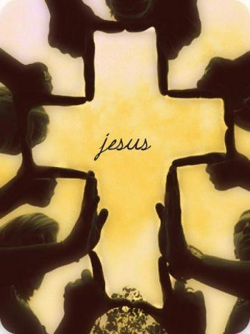

Nuestras Creencias
En los siguientes párrafos usted podrá informarse de manera general en lo que creemos como Iglesia. Ante todo, nosotros creemos en la Biblia y enseñamos que es la verdad perfecta inspirada por Dios. Cada una de las creencias y enseñanzas de la Iglesia Bautista del Amor se deriva directamente de la Palabra de Dios.
-
La Palabra de DIOS
NOSOTROS CREEMOS QUE LA BIBLIA es La Palabra de Dios.
Esta iglesia cree y enseña, basada en el principio de autoridad de las Sagradas Escrituras, teniendo en cuenta que las doctrinas y prácticas de esta iglesia surgen de la convicción de que las Sagradas Escrituras son Palabra de Dios y contienen todo lo necesario para el conocimiento de la salvación y para el cristiano en su testimonio personal y en sus relaciones eclesiales. Creemos en la inspiración verbal y completa de las Escrituras, tanto del Antiguo como el Nuevo Testamento. Entendemos que el Espíritu Santo no sólo inspiró los pensamientos de los escritores, sino que, también, formuló la estructura verbal misma en la que los pensamientos fueron plasmados, con el resultado de que los documentos originales fueron inerrantes en cuanto a los hechos e infalibles en cuanto a la verdad. Por tanto, las Sagradas Escrituras, los 66 libros que componen la Santa Biblia, tienen suprema autoridad en todo lo que atañe a la fe y a la conducta. ( 1 Corintios 2:13; 2 Timoteo 3:16-17; 2 Pedro 1:20-21). La Biblia escrita originalmente, no sólo contiene y transmite la Palabra de Dios, sino que es la Palabra de Dios misma. (2 Timoteo 3:16; 2 Pedro 1:21; Hechos 1:16; Juan 10:35; Mateo 5:18).
Nosotros tomamos la instrucción de la Biblia literalmente; nosotros creemos que es verdadera, no solo una alegoría o fábula. Nosotros tomamos las instrucciones de la Biblia para aplicarlas en las áreas de nuestras vidas y fe, y vamos a ella para obtener respuestas para la vida. En una época donde las opiniones te empujan y los medios de comunicación tienen su agenda en nuestra conciencia social, nosotros creemos que debemos de buscar primero la opinión de Dios antes de tomar cualquier decisión nosotros mismos. -
EL DIOS VERDADERO.
Creemos que hay un solo Dios vivo y verdadero, personal, eterno, perfecto en justicia, infinito en poder, sabiduría y bondad, Hacedor, Sustentador y Arbitro Supremo de todo cuanto existe en el cielo y en la tierra, indeciblemente glorioso en santidad, digno y merecedor de todo amor, adoración, confianza y obediencia; y que en la unidad de la Divinidad existen tres personas (la Santa Trinidad): el Padre, el Hijo y el Espíritu Santo, distintos en el desempeño de oficios, pero iguales en sustancia, atributos divinos y gloria, y las tres personas armonizan en la gran obra de la redención. (Juan 17:3; Éxodo 20:2-3; Deuteronomio 4:39; Mateo 28:19; 2 Corintios 13:14). -

El Hijo
LA DEIDAD DE CRISTO. Creemos que Jesucristo es la segunda persona de la Santa Trinidad, siendo Dios mismo; que es el resplandor de la gloria del Padre y la imagen misma de su sustancia; que hizo el universo y todo lo que hay en él, sosteniéndolo por el poder de su palabra; que en el cumplimiento del tiempo tomó sobre sí la forma del hombre, hecho en su semejanza pero sin pecado; que fue concebido por el Espíritu Santo en el vientre de María siendo una virgen, naciendo así de mujer, de la tribu de Judá, de la simiente de Abraham y David según las Escrituras para que las dos naturalezas perfectas y distintas fuesen unidas en la persona de Jesucristo, a la vez verdadero Dios y verdadero hombre; y que por lo tanto llegó a ser el único Mediador entre Dios y el hombre. (Hebreos 1:2-3; 1 Timoteo 2:5; Mateo 1:22-23; Romanos 9:5; Filipenses 2:6-7).
Creemos que Jesucristo es el único Salvador de la humanidad. Creemos que vivió una vida perfecta, sin pecado, y que al final de ella la ofreció por la humanidad como un sacrificio sustitutivo por los pecados del hombre. Este sacrificio fue el pago justo a Dios por el perdón por el pecado. Este perdón fue activado por su muerte a través del derramamiento de su sangre en la Cruz y fue aceptado por Dios después de su resurrección. Creemos que Él ascendió al cielo después de su resurrección para estar sentado a la diestra del Padre, esperando por el tiempo para recibir a su iglesia en el Rapto, y regresar después de siete años a la tierra para gobernar y dirigir su Reino por 1,000 años.
(Salmos 2:7-9; Isaías 7:14; Isaías 9:6; Isaías 43:11; Miqueas 5:2; Mateo 1:25; Lucas 1:26-35; Juan 1:1; Juan 1:3; Juan 14; Juan 18; Juan 29; Romanos 3:19-25; Romanos 5:6-15; Filipenses 2:5-11; I Tesalonicenses 2:5; I Tesalonicenses 3:16; I Tesalonicenses 4:13-18; Tito 2:10-15; Hebreos 7:26; Hebreos 9:24-28; I Pedro 1:19; I Pedro 2:2; I juan 1:3; Apocalipsis 20:1-6)..